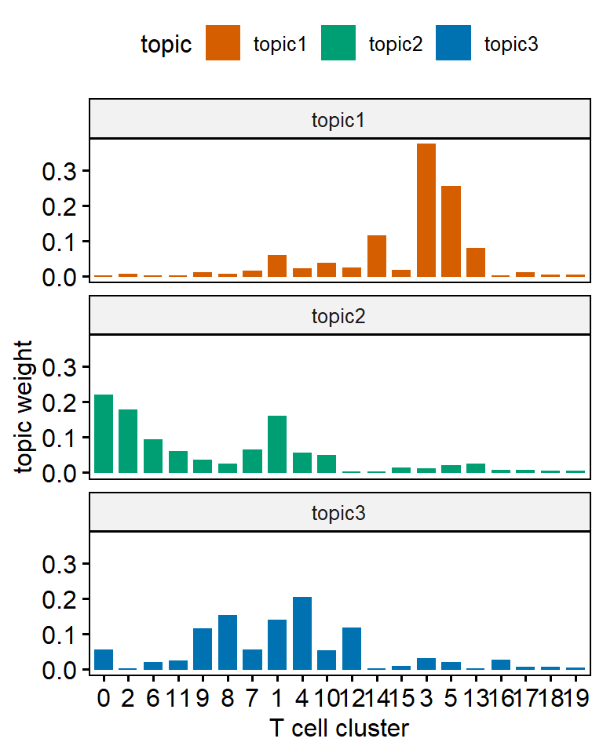
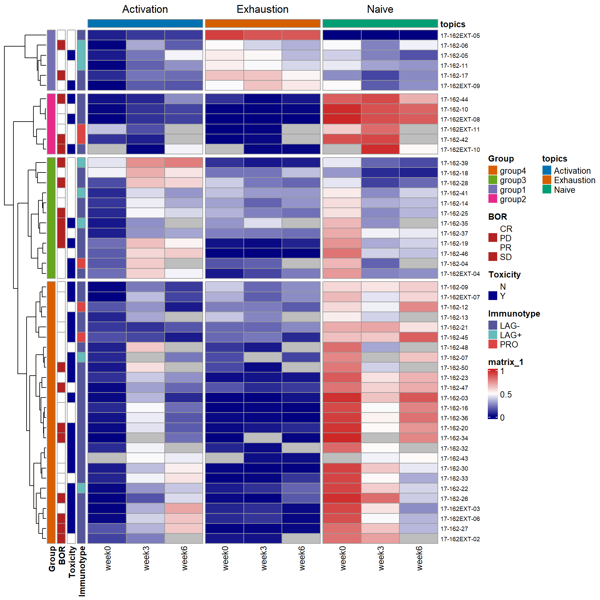
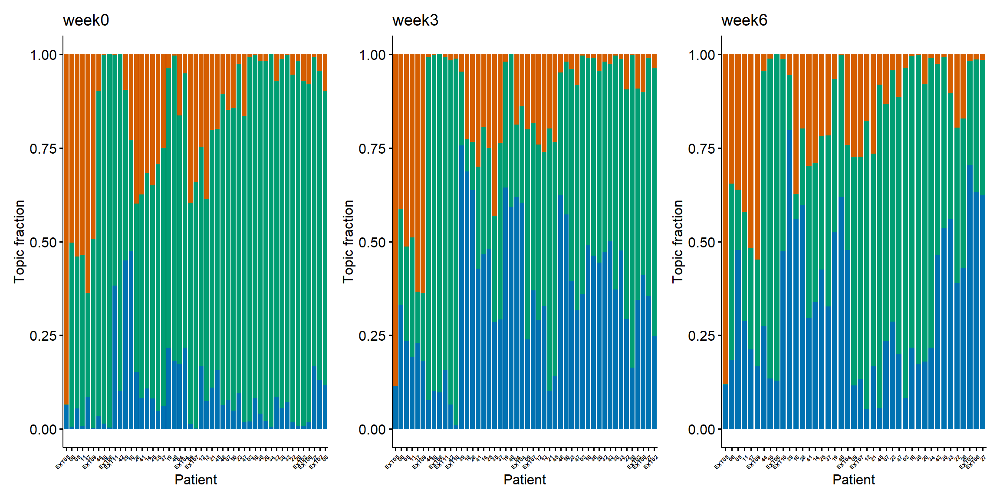

Analyzing longitudinal flow cytometry data of Melanoma patients with TopicFlow
Xiyu Peng, Jasme Lee
April 2023
Here we present our whole workflow for analyzing longitudinal flow cytometry data from a large cohort study (Starting from FCS file to figures in the manuscript). The study includes 1 clinical trial of 51 melanoma patients who underwent immune checkpoint blockade treatment (ICI) with nivolumab and ipilimumab.
The whole workflow can be mainly divided into two parts:
Single cell analysis on flow cytometry data (starting with raw FCS file)
Evaluating pharmacodynamic changes of T cell composition with TopicFlow
The tutorial provides step-by-step analysis to reproduce key results represented in the manuscript. We show our method TopicFlow allows us to mine tens of millions of single cells from a large collection of patient samples to discover the underlying functional themes that characterize the immune composition and the pharmacodynamics changes in cancer patients.
More details about the study can be found in the manuscript, including the full marker panel for the flow dataset. If you find the tool is useful, please cite our paper.
X. Peng, J. Lee, M. Adamow, C. Maher, M. A. Postow, M. Callahan, K. S. Panageas, R. Shen (2023+). “Uncovering the hidden structure of dynamic T cell composition in peripheral blood during cancer immunotherapy: a topic modeling approach”. (Under Review) [bioRxiv]
Overview of TopicFlow
Single-cell flow cytometry analysis
Pre-gating Analysis: from FCS file to single-cell dataset
Each Flow Cytometry Standard (FCS) file acquired from the flow cytometry experiments was independently preprocessed using our in-house automated gating pipeline (built with R 4.1.3). The pipeline should be adjusted based on your panel design. The flow panel used in the manuscript is designed for investigating functional T cell subsets:
- CD3, CD14-CD19, CD4, CD8, FOXP3,
- CCR7, CD45RA, CD27, CD28
- CD25, CD127, CD57, CXCR5, CCR4
- TBET, EOMES, GZMB, KI67, HLA-DR, CD38, GITR, ICOS
- LAG3, CTLA4, PD1, TIM3, TIGIT
In our analysis, the main preprocessing steps include (See figure below):
compensation with matrices exported from FlowJo v10.8.0 software (BD Life Sciences).
biexponential transformation on all marker channels with parameters extra negative decades = 0.5, width basis = -30, positive decades = 4.5 (The file used for transformation can be downloaded from here).
quality control via the R package flowAI (v1.22.0)
pre-gating up to CD3+ T cells via the R package openCyto (v2.4.0). The pre-gating strategy, as the input to openCyto R package, can be found in here.
Click here for R code for the pre-gating steps.
R code for key steps in pre-gating process (work in progress)
# Load libraries
library(openCyto)
library(tidyverse)
library(flowCore)
library(glue)
library(flowAI)
library(flowWorkspace)
library(readxl)
library(janitor)
# Set up dynamic variables
## Below are examples
## String: sample name
pt_samp_nm = "flow_sample_1"
## File path to the FCS file
path_fcs = "./flow_sample_1.fcs"
## File path to the compensation matrix csv file
## Expect format to match flowJo exported version
path_comp_mat = "./flow_sample_1_comp_mat.csv"
## File path for outputs/saving
path_out = "./output"
## File path to gating template
gtFile = "./flow_tcell_gating_template.csv"
## File path to biexp parameters
## Expects 4 columns: full_name, ext_neg_dec, width_basis, positive_dec
## full name should contain the channel/dye name
#3 remaining cols fill in with desired parameter values
path_biexp_params = "./flow_biexp_param.xlsx"
# Load gating template
## Modified the T cell gating template from {openCyto}
### Read in file
dtTemplate = data.table::fread(gtFile)
### Load
gt_tcell = openCyto::gatingTemplate(gtFile)
# Optional to check the template
# gt_tcell
# plot(gt_tcell)
# Import FCS, Build GatingSet
## read in the fcs files
cs <- flowWorkspace::load_cytoset_from_fcs(glue::glue("{path_fcs}"))
## change "Viability" or "L/D" to = "L_D" for consistency
{if(any(c("Viability", "L/D", "LD") %in% flowWorkspace::markernames(cs))){
aux_log = flowWorkspace::markernames(cs) == "Viability" | flowWorkspace::markernames(cs) == "L/D" | flowWorkspace::markernames(cs) == "LD"
markernames(cs) = replace(markernames(cs), aux_log, "L_D")}
}
## Create a GatingSet of 1 sample
gs = flowWorkspace::GatingSet(cs)
# Compensation
## Import comp. mat. csv exported from flowJo
comp.mat = read.csv(path_comp_mat,
header = TRUE,
skip = 0)
## Optional to check comp mat
## comp.mat %>%
## head
## Can remove the X col because that's the row names
comp.mat =
comp.mat %>%
column_to_rownames(var = "X")
## clean up the col names of the comp.mat
marker_chnl_names =
tibble::tibble(colnms = colnames(comp.mat)) %>%
tidyr::separate(colnms, c("chnl", "marker"), sep = "\\.\\.\\.\\.", remove = FALSE)
## further clean up some of the col nanmes to match channel names in `gs`
comp.mat =
comp.mat %>%
dplyr::rename(stats::setNames(marker_chnl_names$colnms, gsub("\\.", "-", marker_chnl_names$chnl))) %>%
{if("PE.Cy5.5.A" %in% marker_chnl_names$chnl) rename(., "PE-Cy5.5-A" = "PE-Cy5-5-A")
else rename(.)} %>%
{if("Alexa.Fluor.700.A" %in% marker_chnl_names$chnl) rename(., "Alexa Fluor 700-A" = "Alexa-Fluor-700-A")
else rename(.)} %>%
{if("Horizon.V450.A" %in% marker_chnl_names$chnl) rename(., "Horizon V450-A" = "Horizon-V450-A")
else rename(.)} %>%
{if("Pacific.Orange.A" %in% marker_chnl_names$chnl) rename(., "Pacific Orange-A" = "Pacific-Orange-A")
else rename(.)} %>%
{if("Qdot.605.A" %in% marker_chnl_names$chnl) rename(., "Qdot 605-A" = "Qdot-605-A")
else rename(.)} %>%
{if("Qdot.655.A" %in% marker_chnl_names$chnl) rename(., "Qdot 655-A" = "Qdot-655-A")
else rename(.)}
# ## Check col names are equal
# colnames(comp.mat) == (colnames(cs) %>% .[!(grepl("FSC|SSC|Time", .))])
## Create the `compensation` object with `flowCore::compensation()`
comp = flowCore::compensation(comp.mat)
## Apply compensation to the `GatingSet` with `flowCore::compensate()`
### Must have the colnames in `comp.mat` match the channel names in the `cytoset`
gs = flowCore::compensate(gs, comp)
# Transformation
## Read in the table of parameters
tbl_biexp_params =
readxl::read_xlsx(path_biexp_params) %>%
janitor::clean_names(case = "all_caps")
## loop through all the channels and create a biexpTrans object per channel
biexpTrans =
purrr::pmap(
list(p = tbl_biexp_params$POSITIVE_DEC,
n = tbl_biexp_params$EXT_NEG_DEC,
wb = tbl_biexp_params$WIDTH_BASIS),
function(p, n, wb, ...){
flowWorkspace::flowjo_biexp_trans(pos = p,
neg = n,
widthBasis = wb)
}
)
## Give names
names(biexpTrans) = tbl_biexp_params$FULL_NAME
## Optional - Checks that all channels have a matching biexpTrans object
# lapply(biexpTrans,
# FUN = function(x){x[["transform"]] %>% attr(., "parameters")}) %>%
# dplyr::bind_rows(.id = "channel")
#
# ## Do channel names match the names of biexpTrans?
# all(names(biexpTrans) %in% parameters(comp))
# all(names(biexpTrans) %in% names(markernames(gs)))
## Create transformerList in order to apply to gs
trans = transformerList(names(biexpTrans), biexpTrans)
## Optional - Check the values before transformation
# gs %>%
# gh_pop_get_data() %>%
# summary()
## Apply to gs
gs = transform(gs, trans)
## optional - Check values after transformation
# gs %>%
# gh_pop_get_data() %>%
# summary()
# Quality/time gate with {flowAI}
## function expect flowSet/flowFrame as input rather than a GatingSet
## use flowWorkspace::gh_pop_get_data() to grab the flowSet
## User can define where to save outputs for report from {flowai]}
## If dir doesn't exist, create one
if(!dir.exists(here::here(glue("{path_out}/flowAI_results")))){
dir.create(here::here(glue("{path_out}/flowAI_results")))
}
qc = flowAI::flow_auto_qc(flowWorkspace::gh_pop_get_data(gs),
folder_results = here::here(glue("{path_out}/flowAI_results")))
## Convert to a flowSet in order to convert back to GatingSet
qc_fs =
qc %>%
# First convert to a flowSet
flowCore::flowSet()
## Rename the sample
flowCore::sampleNames(qc_fs) = pt_samp_nm
## convert the flowFrame obj returned in qc_fs to a GatingSet to pass to openCyto
gs_qc =
qc_fs %>%
flowWorkspace::GatingSet()
## Remote the qc_fs object as it's no longer needed
rm(qc_fs)
# Pre-gating up to CD3+ with {openCyto}
## Set seed using today's date
set.seed(glue::glue({format(Sys.Date(), format = "%Y%m%d")}))
openCyto::gt_gating(gt_tcell, gs_qc)
# Extract intensity matrix from GatingSet object
## Grab marker names from GatingSet for labeling col names in intensity matrix
marker_chnl_names =
flowWorkspace::gh_pop_get_data(gs_qc) %>%
flowWorkspace::markernames() %>%
as.data.frame() %>%
tibble::rownames_to_column() %>%
dplyr::rename(chnl = rowname,
marker_full = ".") %>%
# clean up the names
dplyr::mutate(
marker_full = janitor::make_clean_names(marker_full, replace = c("-" = "", "_" = "", " " = "")) %>% toupper()
) %>%
# Reorder the marker channel names to start with CD3, CD4, CD8 then the rest
dplyr::arrange(match(marker_full, c("CD3", "CD4", "CD8"))) %>%
# Clean up
dplyr::mutate(marker_full = ifelse(marker_full == "FOX_P3", "FOXP3", marker_full))
## Grab the intensity matrix from GatingSet
## the gh_pop_get_indices grabs the 0/1 for whether gated as CD3
intensity_dat =
gs_qc %>%
flowWorkspace::gh_pop_get_indices(y = "cd3") %>%
cbind(gs_qc %>%
flowWorkspace::gh_pop_get_data() %>%
flowCore::exprs(),
"cd3_pos" = .) %>%
tibble::as_tibble() %>%
# Rename for plotting
dplyr::rename(stats::setNames(marker_chnl_names$chnl, as.character(marker_chnl_names$marker_full)))
## Preview of intensity matrix
head(intensity_dat)The output from pre-gating is an intensity matrix with rows corresponding to each cell, and columns corresponding to the time, forward and side scatters, and intensity values for marker and an indicator column for whether the cell is CD3 +/- (indicated as 1/0).
Quality control
When integrating multiple samples, it is important to check if there is a batch effect. To evaluate the possible batch effect, ridge plots can help to check the consistency of transformed intensity values across multiple patient samples, as the example shown below. These ridge plots can be easily made with the help of the Seurat R package. From the figure shown below, we can find the transformed intensity values of all markers are roughly on the same scale.
Using ridge plot to check batch effect
We also recommend to downsample cells from each sample and use UMAP to check if there is a significant batch effect. You may visually assess the UMAP plots and check if there is a significant batch effect among patient samples.
Single-cell clustering analysis
For better visualization and analysis, we choose to use Seurat Object, a data structure provided by the Seurat R package, to store single cell data. We provide the seurat objects (in rds files) of three patients as examples. They can be downloaded from here. For each flow sample (FCS file), there are about 100k cells on average. For our panel, 29 markers (include live/dead, CD14-CD19 with shared fluorescence) are measured for each single cell.
For pooled clustering analysis, we pool all T cells from all patient samples together. We use the Louvain algorithm, a graph-based algorithm for clustering cells. Louvain is the core algorithm of PhenoGraph, the famous python library for clustering flow cytometry data. The data file seurat_object_17162_rerun_all_dim26.rds, containing cells aggregated from all 138 samples in the analysis, is too big to be read by a standard laptop. We recommend to do the following analysis on a server with adequate memory space available.
The code below was run on a server. We requested 250GB memory space for analyzing 17M+ T cell. It ran for about 5 days.
library(Seurat)
library(future)
## parallel computing
plan("multiprocess", workers = 8)
plan()
## increase the maximal size of a data object in R
options(future.globals.maxSize = 100000 * 1024^2)
### data_real_marks (n_cells x n_markers)
### is a matrix of marker intensity values of all T cells (CD3+)
### with each row corresponding to each cell,
### and each column corresponding to each marker (27 markers in total)
#pool_X50 <- CreateSeuratObject(counts = t(data_real_marks), project = "17-162")
#pool_X50
#pool_X50[['time']]<-factor(time)
#pool_X50[['patient']]<-factor(patient)
#pool_X50[['sample']]<-factor(sample)
### read the pre-saved data
pool_X50 <- readRDS(file = "seurat_object_17162_rerun_all_dim26.rds")
## All 27 markers are variable markers across cells
## This step seems unnecessary but it cannot be skipped
pool_X50 <- FindVariableFeatures(object = pool_X50)
### scale each markers
all.genes <- rownames(pool_X50)
pool_X50 <- ScaleData(pool_X50, features = all.genes)
### PCA
pool_X50 <- RunPCA(pool_X50, features = all.genes,approx=FALSE,npcs = 26)
### UMAP based on 26 PCs.
### Use min.dist = 0.1 for better separation
### Recommend the default 0.3 for visualizing each patient samples
pool_X50 <- RunUMAP(pool_X50, dims = 1:26,min.dist = 0.1)
### Construct KNN graph with a fast nearest neighbor search using RANN
pool_X50 <- FindNeighbors(pool_X50, dims = 1:26, nn.eps = 0.5,k.param = 5)
### Clustering cell with Louvain method based on KNN under different resolutions
### This step would be run in parallel
res<-c(0.5, 0.8, 1, 1.2, 1.5, 2, 2.5, 3)
pool_X50 <- FindClusters(pool_X50, resolution = res)
saveRDS(pool_X50, file = "seurat_object_17162_rerun_all_dim26.rds")Alternative approach
The pooled clustering strategy may not be applicable for a larger cohort study. We are working on a pipeline using FlowSOM for cell clustering. In FlowSOM, cells in each patient samples will be independently over-clustered using a self-organizing map (SOM, also a graph-based clustering method), then followed by a consensus clustering (using R package ConsensusClusterPlus) to generate meta-clusters (clusters of clusters within each sample). You may check the protocol of FlowSOM for further details. With the limited experience, the consensus clustering is expected to be the most time and memory consuming step in the analysis pipeline.
Codes below show an example how to convert the data to a FlowSOM object.
### select data for a single patient
pt_seurat<-subset(pool_X50,subset = patient == "17-162-03")
### convert to FlowSOM object
data_FlowSOM<-flowCore::flowFrame(t(as.matrix(pt_seurat[['RNA']]@data)))
tmp <- FlowSOM::ReadInput(data_FlowSOM, transform = FALSE, scale = FALSE)For either clustering approach, you have to tune parameters to determine the number of clusters. For our melanoma dataset, we chose the clustering solution under resolution 1.5 with the highest average Silhouette scores. But once you have selected your clustering results, you can output cell count matrix (clusterbysample) per cluster per sample and visualize the clustering results with UMAP.
## choose resolution = 1.5
Idents(pool_X50)<-"RNA_snn_res.1.5"
## output cell count per cluster per sample
clusterbysample<-table(pool_X50$sample,Idents(pool_all_X50))
## plot UMAP for the whole cohort
DimPlot(subset(pool_X50, idents = 1:20),reduction = "umap", label = TRUE)Figure below shows the UMAP plot for a single patient. We annotate key clusters based on their marker expression.
The cell count matrix clusterbysample contains cell type abundance for each flow sample. We further add sample information for each sample, including sample collection time and patient info, and clinical annotation for each patient, including response, toxicity, and survival data.
As a tutorial for TopicFlow, the following analysis will use the supplementary data of the manuscript as the input. The supplementary data can be downloaded from here.
Explore sample-level heterogeneity with TopicFlow
Getting ready
Firstly, we have to install core R packages required for LDA analysis. We use the R package topicmodels for model inference, R package slam for preparing the input data, R package tidytext for extracting the output data.
library(topicmodels)
library(slam)
library(tidytext)In this workflow, we use some R packages for data visualization and analysis. But these R packages are not necessary, you can use other similar R packages instead.
library(tidyverse)
library(ComplexHeatmap)
library(ggpubr)
library(patchwork)First, we read in the supplementary data file of the manuscript. The file contains the cell type count for individual samples (as the result of the clustering analysis), as well as patient clinical information.
X50_result<-read.csv(file = "https://raw.githubusercontent.com/xiyupeng/topic_modeling/main/data/Supplementary%20Data%20File%20S1.csv")
X50_result<-X50_result[1:138,] ## remove empty rows at the bottom
## toxicity
X50_result$tox<-as.factor(X50_result$irAE...grade.2)
## response
X50_result$res<-as.factor(X50_result$Best.Overall.Response)
levels(X50_result$res)<-c("CR/PR","PD/SD","CR/PR","PD/SD")
## time point
X50_result$Timepoint <-as.factor(X50_result$Timepoint)
X50_result$week<-X50_result$Timepoint
levels(X50_result$week)<-c("0","3","6")The final input data matrix for LDA has 138 samples with 20 features (clusters), while each entry is number of cells per cluster per sample.
## Only focus on first 20 clusters
X50_result %>% select(starts_with("cluster"))->data_matrix
data_matrix<-data_matrix[,1:20]
head(data_matrix[,1:8])Model inference
We use the topicmodels R package for model inference. We use Gibbs sampling algorithm and choose number of topics K = 3:
Gibbs sampling. The topicmodels R package provides two algorithms, variation EM and Gibbs sampling, for model inference. The two different algorithms may contribute to different results (See the documentation of the topicmodels R package). But in the example given in the R package, the Gibbs sampling algorithm seems to return better models than Variation EM. Thus we prefer Gibbs sampling in the analysis. We used the following setting for Gibbs sampling: iter = 1000, burnin = 1000, thin = 100 (1000 Gibbs sampling draws are made with the first 1000 iterations discarded and then every 100th iteration kept).
K = 3. Number of topics K also needs to be selected before running the model inference. There is no “right” answer to the number of topics that are the most appropriate for data. You may use R package ldatuning or cross-validation to select number of topics K. In this case, we failed to select the number of topics with a 10-fold cross-validation, likely a reflection of the size of the dataset (only 138 samples). Thus, we guided the choice of the number of topics based on what is most useful for scientific interpretation. Moreover, during the cross-validation, we observed the biggest drop in perplexity40 (a measure of how successfully a trained topic model predicts new data) is between K = 2 and K = 3. Thus we set K = 3 in this study.
The Gibbs sampling will take several minutes. We can save the result here for further analysis. The pre-ran LDA results can be downloaded from here.
Note: Gibbs sampling is a stochastic algorithm, but the result for this dataset is relatively stable. If you choose to run LDA yourself with a different random seed or change the order of the input data, you may have to switch the order of the three topics to match the results. But generally you should be able to identify the three topics which we will describe below: activation topic, exhaustion topic, and naive topic.
require(slam)
require(topicmodels)
count_matrix_triplet <- as.simple_triplet_matrix(data_matrix)
lda<-LDA(count_matrix_triplet, control = list(seed = 2021, burnin = 1000,thin = 100, iter = 1000), k = 3, method = "Gibbs")
save(lda, file = "~/flow_cytometry/lda/lda_example_K3.Rdata")Below we reload the data and check the output of the LDA model.
## load the data
load(file = "~/flow_cytometry/lda/lda_example_K3.Rdata")
ntopics = 3
## extract output of the LDA model
para<-posterior(lda)
colnames(para$topics)<-paste0("topic",colnames(para$topics))
rownames(para$terms)<-paste0("topic",rownames(para$terms))
#### update to the meta data
X50_result$topics<-topics(lda)
X50_result<-as.data.frame(cbind(X50_result,para$topics))The main output of the LDA model contains two matrices:
- Topic content matrix (cell type-by-topic matrix) represents topics as different discrete distributions over cell types (clusters)
## show first five columns
head(round(para$terms[,1:5],3))## cluster0 cluster1 cluster2 cluster3 cluster4
## topic1 0.000 0.058 0.003 0.372 0.019
## topic2 0.219 0.159 0.176 0.010 0.053
## topic3 0.053 0.138 0.000 0.030 0.202- Topic prevalence matrix (topic-by-sample matrix) displays topic proportions estimated per sample
## show first five rows
head(round(para$topics,3))## topic1 topic2 topic3
## 1 0.009 0.972 0.018
## 2 0.005 0.636 0.359
## 3 0.037 0.882 0.081
## 4 0.164 0.664 0.172
## 5 0.189 0.193 0.618
## 6 0.541 0.406 0.053The topic prevalence matrix will be merged with the original data frame for further analysis. But before investigating the distribution of topics over patient samples, we want to exam the topic content matrix and interpret each topic by selecting representative cell types.
Topic content
The intepretability of topic models is a key advantage. In text analysis, representative terms, in this case, representative clusters, are used to define topics. Sometimes people directly use the topic weights in topic content matrix to select representative terms.
In this case, you can simply find clusters with top weight for each topic with terms(),
terms(lda,5)## Topic 1 Topic 2 Topic 3
## [1,] "cluster3" "cluster0" "cluster4"
## [2,] "cluster5" "cluster2" "cluster8"
## [3,] "cluster14" "cluster1" "cluster1"
## [4,] "cluster13" "cluster6" "cluster12"
## [5,] "cluster1" "cluster7" "cluster9"or visualize them with barplots.
### beta
ap_topics <- tidy(lda, matrix = "beta")
ap_topics$topic<-as.factor(paste0("topic",ap_topics$topic))
### make barplots
ap_topics$term<-gsub("cluster","",ap_topics$term)
term_reorder<-as.character(c(0,2,6,11,9,8,7,1,4,10,12,14,15,3,5,13,16,17,18,19))
ggbarplot(ap_topics, x = "term", y = "beta",color = "topic",fill = "topic",palette = c("#D55E00", "#009E73", "#0072B2"),facet.by = "topic",nrow = 3)+xlab("T cell cluster")+scale_x_discrete(limits = term_reorder)+ylab("topic weight")
One main drawback of using topic weight to select representatives is that high abundant clusters with little variation are likely to be selected as representatives due to their high topic weights. In our analysis, the top representative clusters from each topic are selected after ranking by lift, which is the log ratio of estimated topic weights over its empirical frequency. The lift metric gives higher weights to clusters that appear less frequently in other topics. This metric was proposed by Matt Taddy in the paper On Estimation and Selection for Topic Models, and is also used in the R package stm for structure topic model.
Below we show top 10 clusters with top lift for each topic. In practice, we find the metric lift provides the most interpretable results, helping to select representative clusters for each topic. Thus we can name each topic based upon the most representative cell clusters ranked by lift:
- Topic 1 (orange) mainly contains two CD8 Temra clusters (clusters 3 and 5), one CD4 cytotoxic Tem cluster (cluster 14, GzmB+), and one CD4-CD8- cluster (cluster 13). Thus we named it the Exhaustion topic.
- Topic 2 (green) we labeled the Naive topic, with CD4+ and CD8+ naive T cell clusters identified as the most representative clusters
- Topic 3 (blue) is an Activation topic: The five representative cell clusters we identified include two CD4 T cell clusters (clusters 8 and 4), one CD8 T cell cluster (cluster 12), one Treg cluster (cluster 9), and one CD4-CD8- T cell cluster (cluster 16). Most of clusters of topic 3 are KI67+ and they are expanding upon ICI treatment!
### calculate the lift
wordcounts <- colSums(data_matrix)
logbeta <- lda@beta
emp.prob <- log(wordcounts) - log(sum(wordcounts))
lift <- logbeta - rep(emp.prob, each = nrow(logbeta))
colnames(lift)<-lda@terms
lift<-as.data.frame(lift)
lift$topics<-paste0("topic",1:3)
#### name three topics based on the content
new_label<-c("Exhaustion Topic","Naive Topic","Activation Topic")
names(new_label)<-c("topic1","topic2","topic3")
### show top 10 representative clusters for each topic
lift_top_terms <- lift %>% gather(.,key = cluster,value = lift,-topics) %>%
group_by(topics) %>%
slice_max(lift, n = 10) %>%
ungroup() %>%
arrange(topics, -lift)
lift_top_terms %>%
mutate(cluster = reorder_within(cluster, lift, topics)) %>%
ggplot(aes(lift, cluster, fill = factor(topics))) +
geom_col(show.legend = FALSE,orientation = "y") +
facet_wrap(~ topics, scales = "free",labeller = labeller(topics = new_label)) +
scale_y_reordered()+theme_bw()+scale_fill_manual(values=c("#D55E00", "#009E73", "#0072B2"))+
xlab("lift (log-ratio of topic weight over T cell cluster frequency)")+ylab("T cell cluster")
Topic Prevalence
Below we use heatmap and stackplot to visualize the distribution of topics across patients.
heatmap
In the heatmap, the activation topic mainly captures the expansion of Tcm/em upon treatment. For most patients, the proportion of the activation topic is near zero (dark blue) in pre-treatment samples (week 0). This topic emerges on-treatment as seen by the increase of topic proportions in weeks 3 and 6 samples. At baseline (week 0), most of the patient samples are characterized by a high presence of the naïve topic, which subsequently decreases after ICI treatment as cells transition into more “activated” states. In contrast, a small subgroup of patient samples (group1) has a low proportion of the naïve topic, but a high fraction of the exhaustion topic presented at week 0. There is no visible reduction in the exhausted T cell population after ICI treatment.
We first set up parameters for the heatmap, including color, annotations for rows and columns.
## set color for the heatmap
ann_colors = list(
BOR = c(CR = "white",PR = "white", SD = "firebrick",PD = "firebrick"),
Toxicity = c(N = "white",Y = "darkblue"),
topics = c(`1` = "#0072B2", `2` = "#009E73",`3` = "#D55E00",Activation = "#0072B2", Naive = "#009E73", Exhaustion = "#D55E00" ),
Immunotype = c("LAG-" = "#555599", "LAG+" = "#66BBBB", PRO = "#DD4444"),
Group = c(group1 = "#7570B3", group2 = "#E7298A", group3 = "#66A61E",group4 = "#D95F02")
)
## Annotation columns
annotation_column = data.frame(
topics = factor(rep(c("Exhaustion","Naive","Activation"),each = 3))
)
## Annotation rows
pt_meta<-X50_result %>% select(PatientID,Immunotype,tox,Best.Overall.Response) %>% arrange(PatientID) %>% distinct(PatientID,.keep_all = TRUE)
colnames(pt_meta)<-c("pt","Immunotype","Toxicity","BOR")
rownames(pt_meta)<-pt_meta$ptThen we reshape the topic prevalence matrix and prepare for the data for making the heatmap. We make each row in the heatmap for each patient, while each cell is the topic fraction of one flow sample at one timepoint.
## reshape the gamma matrix (topic fraction) for heatmap representation
rownames(para$topics)<-X50_result$sample
gamma_data<-as.data.frame(para$topics)
gamma_data$pt<-as.factor(X50_result$PatientID)
gamma_data$time<-as.factor(X50_result$Timepoint)
gamma_wide_wna<-gamma_data %>% arrange(pt, time)%>%reshape(.,timevar = "time",idvar = "pt",direction = "wide") ## keep missing value as NA in the matrix
rownames(gamma_wide_wna)<-gamma_wide_wna$pt
head(gamma_wide_wna)Patient 17-162-08 was excluded since this patient only has week 0 sample and made trouble for making the heatmap, because there are other two patients missing week 0 sample (seen in the heatmap below).
## exclude pt 17-162-08 in the meta data
pt_meta_wo6<-pt_meta[-6,]
## we want to use the order of patients (rows) outside the heatmap.
## Thus patients are pre-grouped before heatmap
ourdist<-dist(gamma_wide_wna[-6,-1]) ## again, excluding pt 17-162-08
re<-hclust(ourdist)
group<-as.data.frame(cutree(re,5))
colnames(group)<-"Group"
pt_meta_wo6<-cbind(pt_meta_wo6,group)
pt_meta_wo6$Group<-factor(pt_meta_wo6$Group)
levels(pt_meta_wo6$Group)<-c("group4","group3","group1","group2","group1")
## reorder columns by each topic in the heatmap (still excluding pt 17-162-08)
gamma_wide_wna_reorder<-gamma_wide_wna[-6,order(colnames(gamma_wide_wna))]
col_labels<-rep(c("week0","week3","week6"),3)
## heatmap
ComplexHeatmap::pheatmap(gamma_wide_wna_reorder[,-1],cluster_cols = FALSE,drop_levels = TRUE,annotation_colors = ann_colors,annotation_row = pt_meta_wo6[,2:5],col = colorRampPalette(c("navy", "white", "firebrick3"))(50),fontsize_row= 7,labels_col = col_labels,annotation_col = annotation_column, column_split = annotation_column$topics,cutree_rows = 4)
Stackplot
LDA can not only identify the topics, but also quantify topic fraction within each sample. It can provide novel insights on complex immune phenotypes among patients and identify complex and unique pharmacodynamic changes upon treatment. We can also show topic fraction within each patient sample with stackplots, each at week 0, week 3, and week 6. Again, orange for exhaustion topic, green for naive topic, and blue for activation topic. For better separation, we use the same order for the patients as in the heatmap. The trends have been described in the heatmap.
## add back data of 17-162-08, which has only week 0 data
## use the same patient order as in the heatmap
my_orders<- c(rownames(gamma_wide_wna_reorder)[re$order],"17-162-08")
my_labels<-gsub("17-162*","",my_orders)
my_labels<-gsub("-","",my_labels)
## stackplots for week 0,3,6
ps_list<-list()
timepoint<-c("A","B","C")
week<-c("week0","week3","week6")
for (wk in 1:3){
cols<-paste0(c("topic1.","topic2.","topic3."),timepoint[wk])
topic_fraction<-gamma_wide_wna %>%
select(cols,"pt") %>%
gather(key = "Topic",value = "fraction",-pt) %>% na.omit()
topic_fraction$Topic<-as.factor(topic_fraction$Topic)
levels(topic_fraction$Topic)<-c("Naive topic", "Exhaustion topic","Activation topic")
p1<-ggbarplot(topic_fraction,"pt","fraction",fill = "Topic",palette = c("#D55E00", "#009E73","#0072B2"),color = "Topic")+scale_x_discrete(limits = my_orders[my_orders %in% topic_fraction$pt],labels = my_labels[my_orders %in% topic_fraction$pt])+ylab("Topic fraction")+xlab("Patient")
ps_list[[wk]]<-ggpar(p1,legend = "none",title = week[wk],font.xtickslab = c(5,"bold"),xtickslab.rt = 45)
}
wrap_plots(ps_list,guides = "collect")
Pharmacodynamics of patient subgroups
We may simply use boxplot to visualize the pharmacodynamics of topics within each patient subgroups. In the figure shown below, each subgroup exhibits distinct dynamic patterns within the three interpretable topics:
- Patients in groups 1 and 2 both have inferior increases in activation topic. Group 1 has the highest proportion of the exhaustion topic and group 2 has the highest naïve topic across time.
- Patients in group 3 have the highest increase in the activation topic compared to other groups and are accompanied by the highest decrease in the naïve topic fraction.
- Patients in group 4 has a high proportion of the naïve topic at week 0 and a moderate increase in the activation topic. Patients in group 4 are more likely to experience severe ICI-related toxicity compared to other groups.
## Parepare input data. add assigned group to each patient
integrate_data<-merge(gamma_data,pt_meta_wo6[,c(1,5)],by.x = "pt",by.y = "pt")
integrate_data_reformat<-integrate_data %>%
gather(key = "Topic", value = "Proportion",topic1, topic2, topic3)
integrate_data_reformat$week<-as.factor(integrate_data$time)
levels(integrate_data_reformat$week)<-c(0,3,6)
### boxplots show pharmacodynamics of four groups
color <- c(group1 = "#7570B3", group2 = "#E7298A", group3 = "#66A61E",group4 = "#D95F02")
new_label<-c("Exhaustion Topic","Naive Topic","Activation Topic")
names(new_label)<-c("topic1","topic2","topic3")
ps_list<-list()
groups<-c("group1","group2","group3","group4")
for (group in groups){
ps_list[[group]]<-integrate_data_reformat %>%
filter(Group == group) %>%
ggboxplot(.,x = "week", y = "Proportion",add = "point",fill = color[group])+geom_line(aes(group = pt),color = 'darkgray')+theme(legend.position = "none")+facet_wrap(vars(Topic),nrow = 1,labeller = labeller(Topic = new_label))+ggtitle(group)
}
wrap_plots(ps_list,nrow = 4)